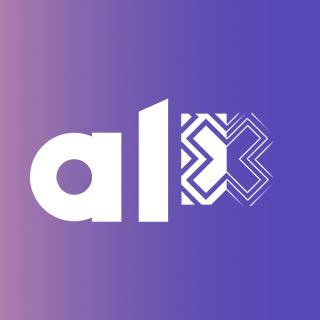
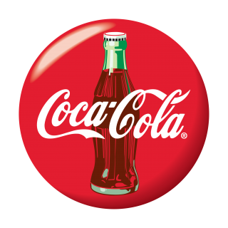
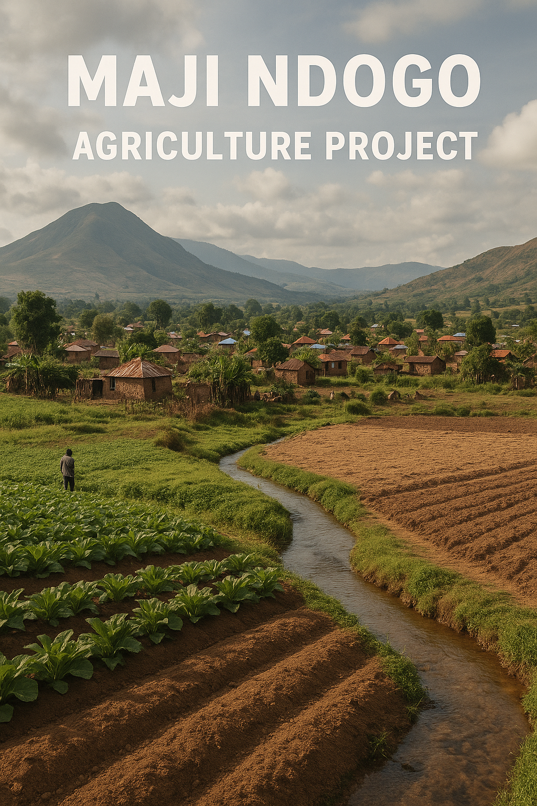

Analysis & Data Handling
- Excel for cleaning and tracking records
- SQL for querying transaction data
- Python with Pandas and NumPy
- Problem framing from field experience
I am an aspiring data scientist with a mathematics background and hands-on experience in digital payments, merchant onboarding, platform support, and field operations. My work has taught me that good data is not just about dashboards; it is about accurate records, clear processes, and decisions that make daily operations easier.

2025 – 2026
I am currently enrolled in the ALX Africa Data Science Program, where I am building practical skills in Excel, SQL, Power BI, Python, and machine learning.
The program emphasizes problem-first thinking: understanding real challenges in business, communities, and everyday operations before choosing the right analytical approach.
Through this training, I am learning to transform raw data into clear, actionable insights that help teams make smarter decisions and operate more efficiently.
My goal is to apply these skills in ways that help organizations and communities make better data-driven choices.

2016 – 2020
My BSc in Mathematics gave me a strong foundation in logical thinking, problem-solving, and quantitative analysis. Courses such as Statistics, Calculus, and Operations Research helped me learn how to break down complex problems and reason clearly, skills I now apply in data science.
My experience has grown across digital payments, customer-facing operations, platform support, and merchant onboarding. These roles have shaped how I think about data: it must be accurate, practical, and close to the people using it every day.
April 2026 – Present
I support merchant sales and KYC operations at Zanaco HQ by reviewing merchant documents, raising tickets, linking POS terminals, and following up with Relationship Managers (RMs). I also track TDR movements and daily activities, monitor stock needs such as till rolls, and help merchants resolve service issues by coordinating with IT, Finance, Digital, and Operations teams.
Jan 2026 – Apr 2026
I worked as a toll collector at Katuba Toll Gate, one of Zambia's busiest toll gates, where accuracy and speed were important throughout each shift. My responsibilities included collecting toll revenue, issuing receipts, assisting road users, reconciling daily transactions, and maintaining accountability during high-traffic periods and shift handovers.
Nov 2024 – Dec 2025
At Onyx Connect, I worked as a Trade Development Representative responsible for developing my assigned territory and supporting merchants using Zanaco POS solutions. I promoted both card payments and MNO payments on POS, onboarded new merchants, followed up on inactive terminals, and made sure merchants received support whenever they needed help with their daily transaction operations.
Aug 2023 – Feb 2024
I served as a key contact between internal teams, network providers, and game providers to keep the platform running smoothly. I helped resolve technical issues quickly, reducing downtime and supporting a better user experience.

Feb 2023 – Aug 2023
I worked across key accounts such as Hungry Lion, Cheers, Choppies, hotels, and other retail outlets to make sure products were available, well displayed, and properly stocked. My responsibilities included checking expiry dates, arranging shelves and displays, monitoring stock levels, engaging store managers, and pushing for new orders when stock needed to be replenished.
Mar 2021 – Feb 2023
I promoted mobiLot devices that enabled airtime sales, TV subscription payments, and loan access through a POS platform. My daily work involved identifying potential clients, explaining how the devices worked, following up after onboarding, and helping customers resolve basic service issues through calls and WhatsApp support.
Tools & Working Methods
The tools I am building around the work I know best: merchant records, POS activity, field follow-ups, and operational reporting.
Data Projects
Practical data projects focused on real operational and community problems.
Drawing on my field experience, I identified an operational gap: field agents often lack real-time access to merchant performance data and terminal locations, while managers rely on delayed reports for decisions.
The project is structured in phases, starting with an analytics pipeline using SQL, Excel, and Power BI to turn raw transaction data into actionable insights. Later phases introduce a mobile-friendly dashboard and predictive analytics to help teams identify at-risk merchants earlier.
The goal is to move from reactive reporting to a practical decision-support system for field operations and management.
This project explores agricultural optimization in Maji Ndogo using Python and data analytics. It analyzes soil conditions, rainfall patterns, and crop yield data to identify suitable farming locations and recommend crops based on local environmental factors.
